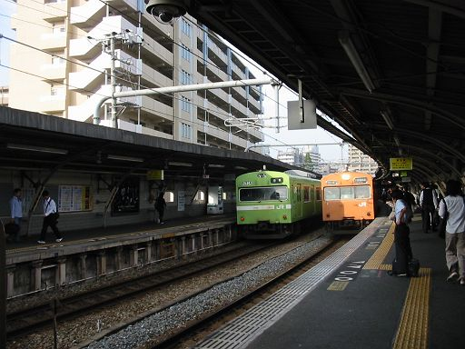
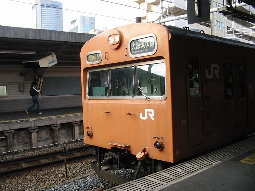
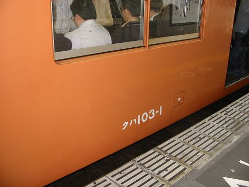
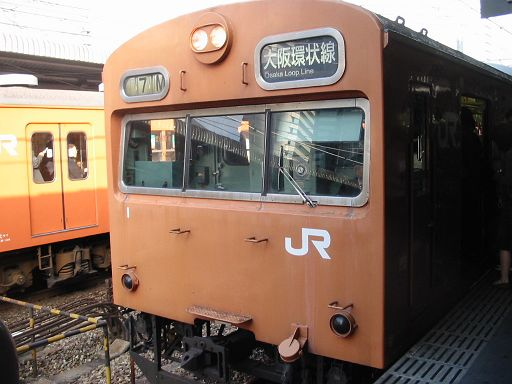
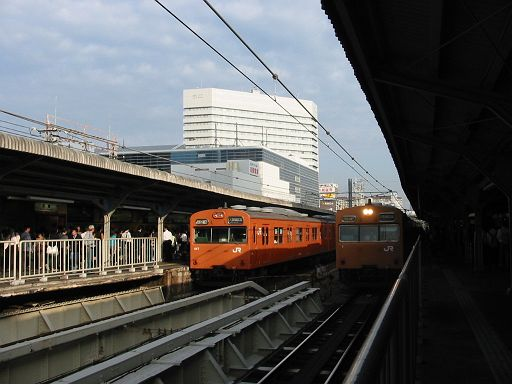

鉄オタ喜ばしたろ思ってオレンジネタ以外を載せたら
そっちの鉄分もいいけど、オレンジの鉄分が欠乏して苦しい～と世界中から悲鳴が聞こえました。
そんなに見たいのか？？？
とかいいつつ、日ごろの観察で103-1の反対側は高だ！というのを発見して嬉しい鉄子です。
尼オタが教えてくれた「オタ雑誌の103特集」を
旦那と本屋で立ち読みしたところ、それもびっちり書いてありました
全国のオタが注目しているこの車両（編成）で、 今週も一度103-1で出勤した私って、もしかしてシアワセ？
天満の鉄子はＹ婦人とは別の人です。誤解の無き様。
鉄子さん、仕事疲れか、よく眠れません。早く目がさめてちゃったよー。
布団の中にいるのもなー。もう会社いってネットでもするかなあ
あ、朝って電車の本数多いよな。もしかしたら写真撮影にサイコーな時間では。低高並ぶかも！！
よーし、天満は向かいホームとの間に柵があるから、そうそう、
前回も撮影した桜ノ宮の端っこでカメラ構えてみーよおっと！！
桜ノ宮到着。よしゃー早速旧い車両来たから撮っちゃえー。緑とオレンジだーパシャ

ひやー！いきなり103-1だ～
尼オタの教えだ、一歩前に出るんだ～私！パシャ

よしゃー次横っ面～パシャ

どやー103-1やで～嬉しいかーオタども！
せっかくや、コレ乗って今日は出勤や
桜ノ宮朝7:57乗車。
京橋までのわずか数分
天満の鉄子は悩みました。
北京も尼もなんでコイツにご執心なんやろ。
これで出勤してるウチって実はシアワセ者？
ちゅーことは、このシアワセをおすそ分けする使命があるちゅーことか。うむむ。。
よしゃー！８：００丁度やな。まだそないに出勤してけーへんやろ。 行くぜ撮影！
京橋で下車して、なんとカメラを構える天満の鉄子。
お願いー誰も見ないでーあたしのことぉぉこれは北京と尼の怨念のせいなのよ～パシャ！

もーここまでくりゃいっしょじゃーもう一発～パシャ！

（後ろに京阪ホテル見えてます）
通勤真っ只中の京橋駅08:01の決死の撮影！
こんなトコ誰かに見られてたらどうするとか考えないのか、天満の鉄子！
中年会社員の鉄子、尊厳か何かを京橋駅ホームに捨てて次号に続く。。
都島